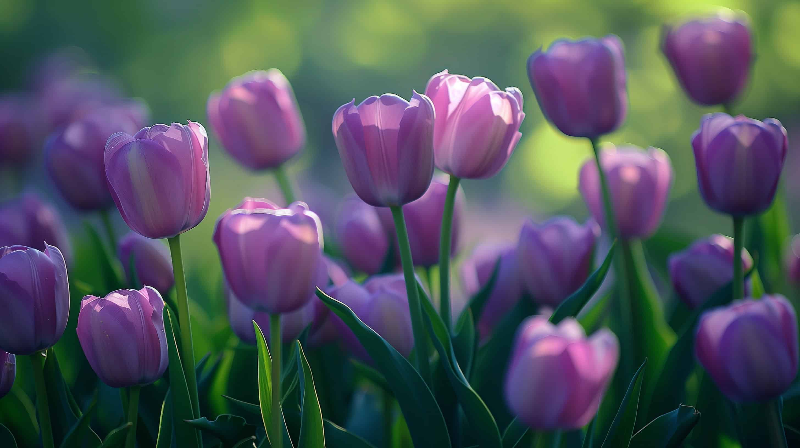

Tulips are one of my favorite spring flowers because of their soft petals and bright colors. There are over 3,000 varieties, and they come in many beautiful shades. Tulips originally came from Central Asia before becoming famous in the Netherlands. Different colors have different meanings, like red for love and purple for royalty. Even though they only bloom for about a week, their beauty makes them worth waiting for every spring.